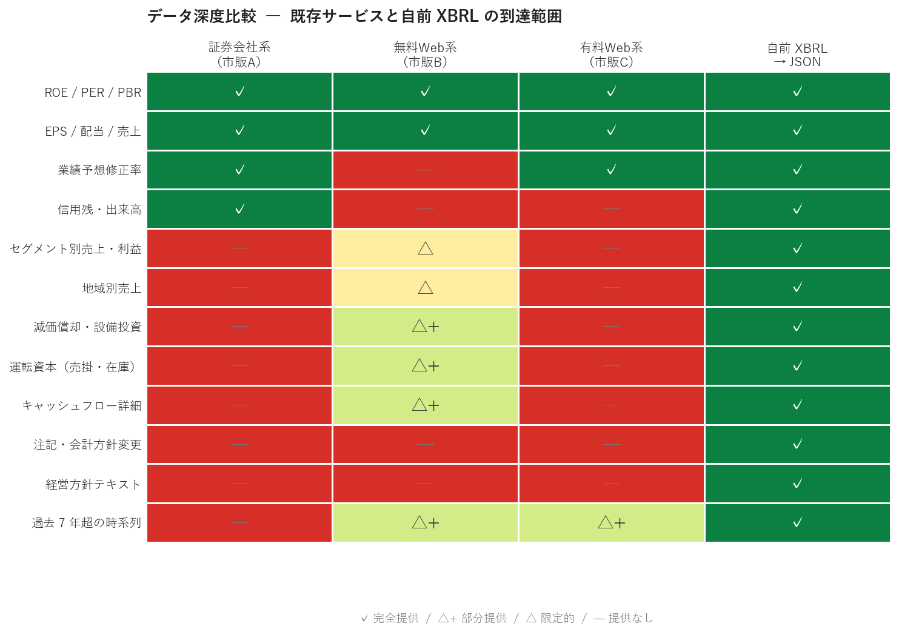
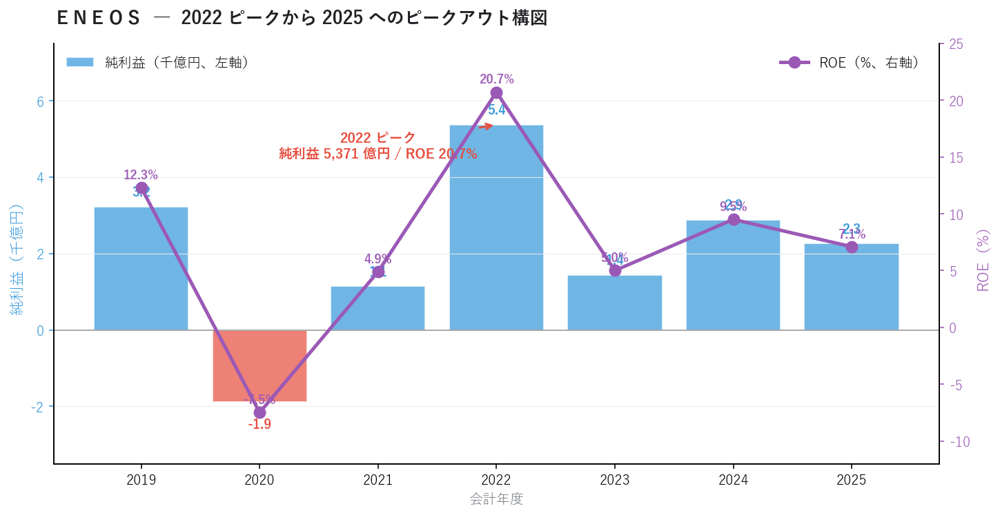
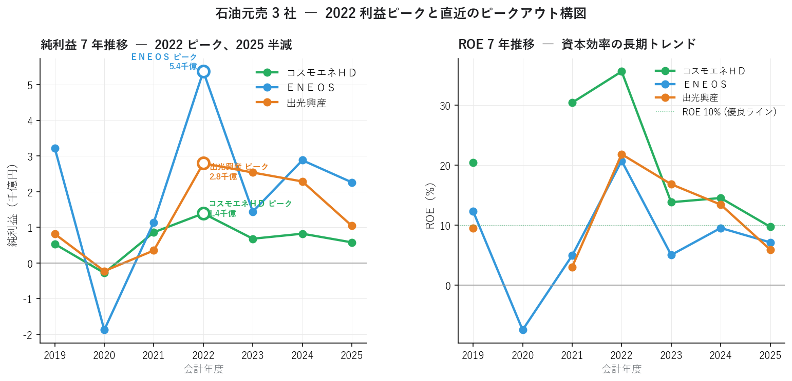
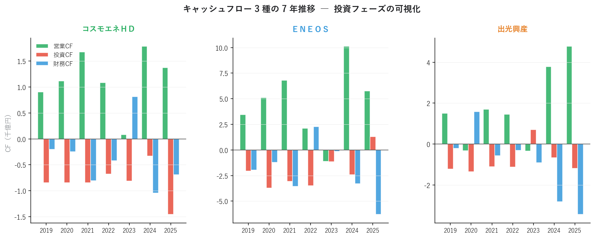
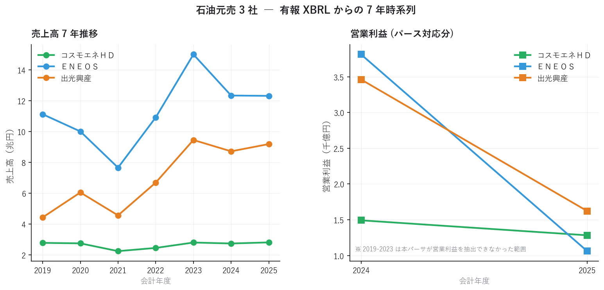

XBRL とは何か ― 市販データでは届かない「決算書そのもの」に手を伸ばす
連載01〜05 では、市販の銘柄情報サービスから取れる 集計済み数値 だけで業績軸（PEG / マルチファクター / リビジョン / サプライズ）と需給軸（信用需給）の立体評価を組み立てました。しかしそこには明確な限界があります。
ＥＮＥＯＳ の純利益は 2022 年に 5,371 億円のピークを付け、ROE 20.7% を記録。しかし 2025 年は純利益 2,261 億円・ROE 7.1% まで半減しています。これは連載01〜05 のスナップショットには映りません。同じ会社の 7 年間の構造的なピークアウト は、市販データの枠を超えた 有価証券報告書 XBRL からしか取り出せません。
本記事ではフェーズ 2 の入口として、XBRL とは何か、なぜ個人投資家でも XBRL を扱う必要があるのかを、ＥＮＥＯＳ・出光・コスモエネＨＤ の 7 年実データで示します。
■ XBRL の概要
フェーズ 1（連載01〜05）の限界
連載01〜05 は強力なフレームワークでしたが、本質的に スナップショット分析 です。市販データは「直近時点の集計済み数値」を提供してくれますが、以下のような情報には届きません。
| 種類 | 例 | 市販データで取れるか |
|---|---|---|
| 過去 7 年超の時系列 | ＥＮＥＯＳ の純利益が 2022 → 2025 で半減 | △（直近 3〜5 年が限界） |
| セグメント別売上・利益 | この会社は何で儲けているのか | ✗ |
| キャッシュフロー詳細 | 営業 CF / 投資 CF / 財務 CF の内訳 | △（合計値のみ） |
| 減価償却・設備投資の絶対額 | フリーキャッシュフロー計算 | ✗ |
| 運転資本（売掛・在庫・買掛） | 運転資本サイクルの分析 | ✗ |
| 経営方針・見通しテキスト | 中期計画の方向性 | ✗ |
| 会計方針変更・注記 | 会計品質・利益操作の検知 | ✗ |
これらが見えないまま投資判断するのは「ファンダメンタル分析」とは呼べません。地図なしで山を登るようなものです。
XBRL とは ― タグ付きの XML
XBRL（eXtensible Business Reporting Language） は、決算データを機械可読にした XML 規格です。
| 項目 | 内容 |
|---|---|
| 正式名称 | eXtensible Business Reporting Language |
| 規格策定 | XBRL International（非営利団体） |
| 日本での導入 | 2008 年〜（金融庁が EDINET で採用） |
| 採用国 | 米国 SEC、欧州 ESMA、日本など 60 カ国以上 |
| 基本構造 | タグ付きの XML。要素（element）と文脈（context）で意味を表現 |
| タクソノミ | 要素の定義集。日本では金融庁が公開（業種別あり） |
決算短信や有価証券報告書には、人間向けの PDF と並んで 必ず XBRL ファイル が同時提出されています。PDF は OCR が必要で誤読が頻発しますが、XBRL なら タグごとに値を直接取り出せる ため、機械処理に向いています。
EDINET と TDnet の使い分け
XBRL は主に 2 つの経路で入手できます。
| 経路 | 種類 | 提供期間 | 速報性 | アクセス |
|---|---|---|---|---|
| EDINET | 有価証券報告書・四半期報告書 | 過去 5〜7 年が公開 | 報告書なので遅い | 公式 API（OAuth 不要） |
| TDnet | 決算短信・適時開示 | 直近のみ | 発表直後 | API なし、スクレイピング |
EDINET は 金融庁公式 で、長期時系列の業績分析に向きます。TDnet は 取引所 が運営し、決算発表 直後 の数値を即座に取り出せます。連載04 で扱った業績モメンタムや連載03 のリビジョンは、本質的には TDnet 由来のデータです。
既存サービスとの位置づけ
市販データと自前 XBRL を比較すると、データ深度の階段が見えます。

| サービス | データ深度 | 時系列 | カスタム分析 | 価格 |
|---|---|---|---|---|
| 証券会社系（市販 A） | △ 集計済み | △ 直近 | ✗ 不可 | 無料 |
| 無料 Web 系（市販 B） | ○ 中程度 | ○ 数年 | ✗ 不可 | 無料 |
| 有料 Web 系（市販 C） | ○ 中程度 | ○ 数年 | △ 限定 | 有料 |
| 自前 XBRL → JSON | ◎ 完全 | ◎ 全期間 | ◎ 自由 | 無料（手間あり） |
「無料」と書いた自前構築には データ取得スクリプトの実装 と XBRL の理解 という参入障壁がありますが、一度作ってしまえば永続的に使えます。
本記事における XBRL の取り扱い
本連載では XBRL を直接 XML で扱うのではなく、JSON に正規化したスキーマ で扱います。
data/yuho/ ← 有価証券報告書（EDINET 由来）
└── E24050/ ← EDINET コード（=ＥＮＥＯＳ）
├── E24050_2019-03-31.json ← 1 期 1 ファイル
├── E24050_2020-03-31.json
└── ... 2025-03-31 まで 7 期分
data/statements/ ← 決算短信（TDnet 由来）
├── 7203_2025-03-31_FY.json ← {コード}_{決算期末}_{種別}.json
├── 6758_2025-03-31_FY.json
└── ... 1,368 ファイル
JSON のセクション構成は以下のとおりです。これを採用することで、XBRL の複雑なタクソノミから解放され、Python の json.load だけで業績分析できます。
{
"metadata": { "code": "5020", "fiscal_year_end": "2025-03-31", ... },
"financials": { "net_sales": ..., "operating_income": ..., "roe": ..., ... },
"segments": [ { "label": "燃料油", "net_sales": ..., "operating_income": ... }, ... ],
"_source": { "format": "xbrl", "file": "...", "parser_version": "..." }
}
XBRL → JSON への変換実装は次回連載07 で詳述します。本記事は 「変換後の JSON で何が見えるか」 に焦点を当てます。
■ 分析で分かったこと
ＥＮＥＯＳ・出光・コスモエネＨＤ の有報 7 期分（2019-2025 年）を JSON 化し、業績の長期トレンドを取り出しました。
ＥＮＥＯＳ ― 2022 ピークから 2025 へのピークアウト構図

ＥＮＥＯＳ の 7 年純利益と ROE を並べると、極めて明瞭な 山型 が浮かびます。
| 年度 | 純利益（億円） | ROE | 解釈 |
|---|---|---|---|
| 2019 | 3,223 | 12.3% | コロナ前の安定水準 |
| 2020 | −1,879 | −7.5% | コロナ・原油急落で赤字 |
| 2021 | 1,140 | 4.9% | 回復途上 |
| 2022 | 5,371 | 20.7% | ★ピーク（原油価格高騰の恩恵） |
| 2023 | 1,438 | 5.0% | 急減（特需消失） |
| 2024 | 2,881 | 9.5% | 部分回復 |
| 2025 | 2,261 | 7.1% | 再び低下 |
2022 年の純利益 5,371 億円・ROE 20.7% は、原油価格急騰局面で全石油元売が記録した 特需 によるもの。それ以降は段階的に水準が下がり、2025 年は純利益 2,261 億円・ROE 7.1% で ピーク比 −58% まで縮小しています。
連載01〜05 で観察したサインがここで全部裏付けられます。
| 連載 | ＥＮＥＯＳ のシグナル | 有報 XBRL での解釈 |
|---|---|---|
| 02 | Consensus 13（最下位） | 2022 ピーク後の業績低迷を市場は既に織り込み済み |
| 03 | 修正率 −3.74%（下方修正） | 2024 → 2025 で再低下のアナリスト調整 |
| 04 | 経常変化率(予) −7.2%（来期減益） | ピークアウト構図の継続 |
| 05 | 信用倍率 8.94 倍 + 信用買い増 | 「2022 の良かった頃に戻る」期待で個人が買い建て |
つまり連載05 で示した「業績NG × 踏み上げ罠」は、7 年スパンで見れば 2022 ピークの記憶を引きずる個人投資家と、業績の構造的低下を織り込むアナリストの認識ギャップ ということが分かります。これは有報 XBRL を使わない限り見えない結論です。
石油元売 3 社の 7 年比較 ― 純利益と ROE
ＥＮＥＯＳ 単独の構図を、3 社で比較すると違いが明確になります。

3 社とも 2022 ピーク → 2025 半減 という共通のサイクルを辿っていますが、レベル感は大きく違います。
| 銘柄 | 2022 ROE | 2025 ROE | 7 年平均 ROE（NaN除外） |
|---|---|---|---|
| コスモエネＨＤ | 35.6% | 9.7% | 約 18%（全期間で高水準） |
| 出光興産 | 21.8% | 5.9% | 約 10% |
| ＥＮＥＯＳ | 20.7% | 7.1% | 約 7%（赤字年込み） |
コスモエネＨＤ は 規模は小さいが資本効率が突出して高い。2022 ピークでは ROE 35.6%、低水準の年でも他 2 社より高い ROE を維持しています。連載01〜05 でコスモが 5 連続で良好評価を得ていたのは、有報レベルでは そもそも資本効率が違う ことが背景にあります。
ＥＮＥＯＳ は 規模で他 2 社を圧倒（売上 12 兆円 vs 出光 9 兆円 vs コスモ 2.8 兆円）しますが、赤字年（2020）を含む 7 年平均で ROE は他社より低い。連載01 の「バリュー候補だが低収益」が、有報 7 年でも一貫した事実だと裏付けられます。
キャッシュフローで見る投資フェーズ
純利益だけでは見えない事業フェーズの違いが、CF 3 種で浮かびます。

3 社とも 2025 年に 財務 CF が大きくマイナス（=借入返済・自社株買い・配当などの株主還元）になっています。これは「2022 ピークで稼いだ現金を株主に還元するフェーズ」に入ったサインです。
特に ＥＮＥＯＳ の 2025 年は財務 CF −6,304 億円（前年比約 2 倍の流出）と突出。一方で営業 CF 5,768 億円が稼げているため、財務的に追い込まれての借入返済ではなく、手元現金を株主に返す積極的な姿勢 の表れと読めます。
連載05 の「信用倍率 8.94 倍 + 信用買い増 +33 千株」は、こうした 株主還元への期待 も背景にある可能性があります。配当性向や自社株買いペースの分析は、本連載のフェーズ 3 以降（連載10 アクルーアル、11 三角検証など）で深掘りします。
売上は安定、営業利益が情報源 ― パーサーの現実

売上高の 7 年推移は綺麗にトレースできますが、営業利益は 2024-2025 の 2 年分しかパースできていません。これは現在の有報 XBRL パーサーが、IFRS 連結ベースの営業利益を抽出できる範囲に限界があるためです。
XBRL の構造はタクソノミ・会計基準（JP / IFRS / US）・連結/個別の組み合わせで複雑になり、パーサー側の対応度 が課題になります。本連載のフェーズ 2 後半（連載08 スキーマ設計、連載11 三角検証）で、このパース品質の改善方法を扱います。
連載01〜05 で「届かなかったもの」のまとめ
有報 XBRL からの 7 年時系列が出てきたことで、連載01〜05 のスナップショットでは見えなかった以下が明らかになりました。
- 業績ピークの絶対位置（ＥＮＥＯＳ 2022 = 純利益 5,371 億円・ROE 20.7%）
- ピークからの低下幅と速度（3 年で純利益半減・ROE ⅓）
- 3 社の構造的な資本効率差（コスモ > 出光 > ＥＮＥＯＳ）
- キャッシュフローの構造変化（2025 年に株主還元フェーズへ）
- 赤字年の存在（ＥＮＥＯＳ 2020 = 純利益 −1,879 億円）
これらはすべて、「自前で XBRL → JSON 化する」という 1 つのステップを越えるだけ で手に入る情報です。
■ XBRL → JSON 変換の方針
具体的な実装は次回連載07 で詳述します。ここでは方針だけ紹介します。
1. XBRL の構造
XBRL ファイルは、要素（タグ）と文脈（context）の 2 軸で値を表現します。
<jpcrp_cor:Revenue contextRef="CurrentYearConsolidatedDuration" unitRef="JPY" decimals="-6">
12322494000000
</jpcrp_cor:Revenue>
jpcrp_cor:Revenue= タクソノミ要素（売上高）contextRef="CurrentYearConsolidatedDuration"= 当期連結期間unitRef="JPY"= 通貨単位- 値 = 12,322,494,000,000（円） = 約 12.3 兆円
2. JSON への正規化スキーマ
複雑な XBRL を、扱いやすい辞書構造に正規化します。
{
"metadata": {
"edinet_code": "E24050",
"sec_code": "5020",
"company_name": "ＥＮＥＯＳホールディングス株式会社",
"fiscal_year_end": "2025-03-31",
"accounting_standard": "IFRS",
"is_consolidated": True
},
"financials": {
"net_sales": 12322494000000,
"operating_income": 106093000000,
"net_income": 226071000000,
"roe": 0.071,
"operating_cf": 576835000000,
"investing_cf": 130765000000,
"financing_cf": -630414000000,
# ... 約 40 項目
},
"segments": [
{ "label": "燃料油", "net_sales": ..., "operating_income": ... },
...
]
}
3. パース戦略
XBRL を JSON に正規化する主要ライブラリと、本連載でのアプローチを比較します。
| ライブラリ | 学習コスト | カスタマイズ性 | 速度 | 本連載での利用 |
|---|---|---|---|---|
arelle |
高（XBRL 全機能対応） | ○ | △ | 参考のみ |
python-xbrl |
中 | △ | △ | 不採用 |
| lxml + 自前マッピング | 低 | ◎ | ○ | 連載07 で採用 |
XBRL の全機能を扱う arelle は強力ですが、本連載では「日本企業の業績指標を扱う」という限定された用途なので、lxml で必要なタグを抜き、自前で正規化する アプローチが効率的です。
■ Python コードの紹介
XBRL → JSON 化後のデータを扱う基本コードを紹介します。XBRL のパース実装そのものは次回連載07 で詳述します。
有報 JSON の読み込みと 7 年時系列化
import json
from pathlib import Path
import pandas as pd
def load_yuho_timeseries(edinet_code: str, root: Path = Path("data/yuho")) -> pd.DataFrame:
"""有報 JSON を 7 期分まとめて時系列 DataFrame にする。"""
rows = []
for f in sorted((root / edinet_code).glob("*.json")):
with open(f, encoding="utf-8") as fp:
d = json.load(fp)
meta = d.get("metadata", {})
fin = d.get("financials", {}) or {}
rows.append({
"fy": meta.get("fiscal_year_end", "")[:4],
"net_sales": fin.get("net_sales"),
"operating_income": fin.get("operating_income"),
"net_income": fin.get("net_income"),
"roe": fin.get("roe"),
"op_cf": fin.get("operating_cf"),
"inv_cf": fin.get("investing_cf"),
"fin_cf": fin.get("financing_cf"),
})
return pd.DataFrame(rows)
# ＥＮＥＯＳ（E24050）の 7 年時系列
df_eneos = load_yuho_timeseries("E24050")
print(df_eneos)
セグメント情報の取り出し
def load_segments(edinet_code: str,
fy_end: str,
root: Path = Path("data/yuho")) -> pd.DataFrame:
"""有報 JSON から特定年度のセグメント情報を DataFrame にする。"""
f = root / edinet_code / f"{edinet_code}_{fy_end}.json"
with open(f, encoding="utf-8") as fp:
d = json.load(fp)
seg = d.get("segments", [])
if isinstance(seg, dict):
seg = seg.get("current", [])
return pd.DataFrame(seg)
決算短信 JSON のスキャン
決算短信（TDnet 由来）は 1 社 1 ファイルではなく {コード}{決算期末}.json 形式なので、ファイル名から自動分類できます。
def scan_statements(root: Path = Path("data/statements")) -> pd.DataFrame:
"""statements/ 配下の JSON ファイルをスキャンしてカタログ化。"""
rows = []
for f in root.glob("*.json"):
parts = f.stem.split("_")
rows.append({
"コード": parts[0],
"決算期末": parts[1] if len(parts) > 1 else "",
"種別": "_".join(parts[2:]) if len(parts) > 2 else "",
"パス": str(f),
})
return pd.DataFrame(rows).sort_values(["コード", "決算期末"], ascending=[True, False])
まとめ
- 連載01〜05 で扱った市販データは 集計済みのスナップショット で、過去 7 年の業績トレンド・セグメント情報・CF 詳細などには届かない
- XBRL（タグ付き XML） を自前で取得・パース・JSON 化すれば、機関投資家と同じ "決算書そのもの" の中身にアクセスできる
- 取得経路は 2 つ ― EDINET（有報・四半期、長期時系列）と TDnet（決算短信、速報性）
- ＥＮＥＯＳ の有報 7 年データから、2022 純利益 5,371 億円・ROE 20.7% のピーク → 2025 半減（純利 2,261 億円・ROE 7.1%） という構造的なピークアウトが明確に
- 連載05 までの警戒シグナル（業績NG × 踏み上げ罠）は、有報 7 年で 「2022 の良かった頃に戻る期待」と「業績低下の現実」のギャップ として説明できる
- 3 社の比較で、コスモエネＨＤ の 資本効率の構造的優位（7 年平均 ROE 18%）が浮かぶ
- フェーズ 1 では届かなかった ① 業績ピークの絶対位置 ② 低下幅と速度 ③ 資本効率差 ④ CF 構造変化 ⑤ 赤字年の存在 が、すべて XBRL → JSON の 1 ステップで取り出せる
次回連載07 では EDINET / TDnet からの XBRL 取得とパース実装 に踏み込みます。EDINET API の呼び出し方、ZIP の解凍、XBRL から JSON への変換ロジックまで、実際のコードで解説します。
データ出典: EDINET API（金融庁）から取得した有価証券報告書 XBRL × 7 期分 × 3 社、自前パーサで JSON 正規化